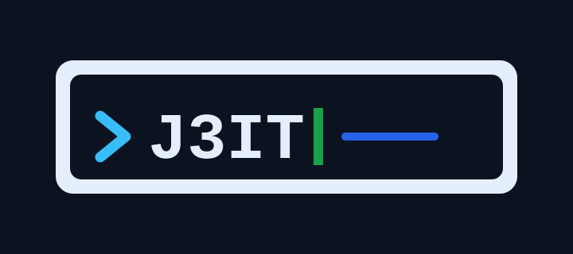
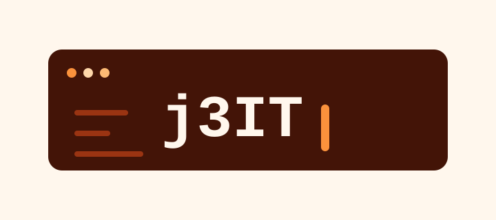
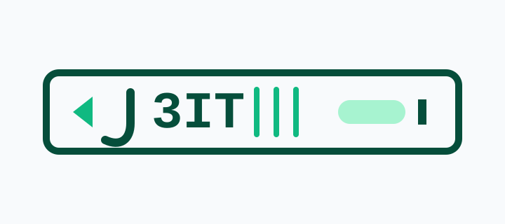
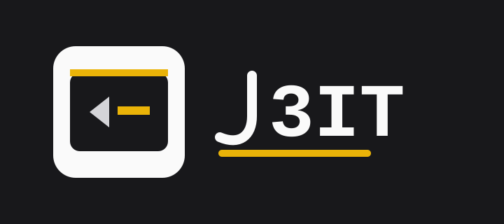
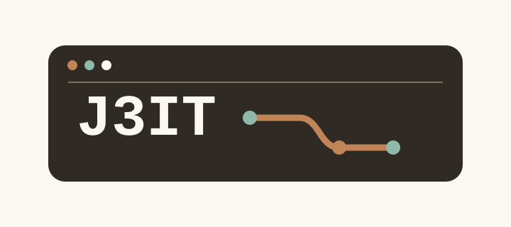

Focused review board for option 5. Option 3 proofs are now separated into their own file.

Uppercase J3IT. Navy, ice, sky, blue, and green.

Lowercase dotted j. Espresso, orange, cream, and copper.

Lowercase dotless j. Deep green, mint, and slate white.

Uppercase J without top bar. Zinc, white, gray, and yellow.

Uppercase J3IT. Warm charcoal, sand, copper, and sage.